Psychosis Biomarkers with Clinical Patients
My postdoctoral research investigates measures that could help characterize psychosis risk in people at clinical high risk.
VA research profileshe/her
I use behavioral measures and electroencephalography (EEG) to study sensory processing in schizophrenia and autism and to develop more inclusive ways to measure brain activity.
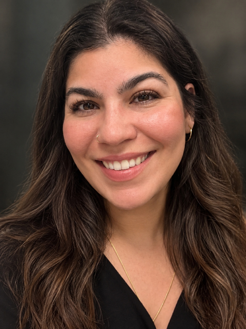
My postdoctoral research investigates measures that could help characterize psychosis risk in people at clinical high risk.
VA research profileI study how people with different levels of schizotypy and autistic traits process sights and sounds. My work includes studies of visual discomfort and sensory memory.
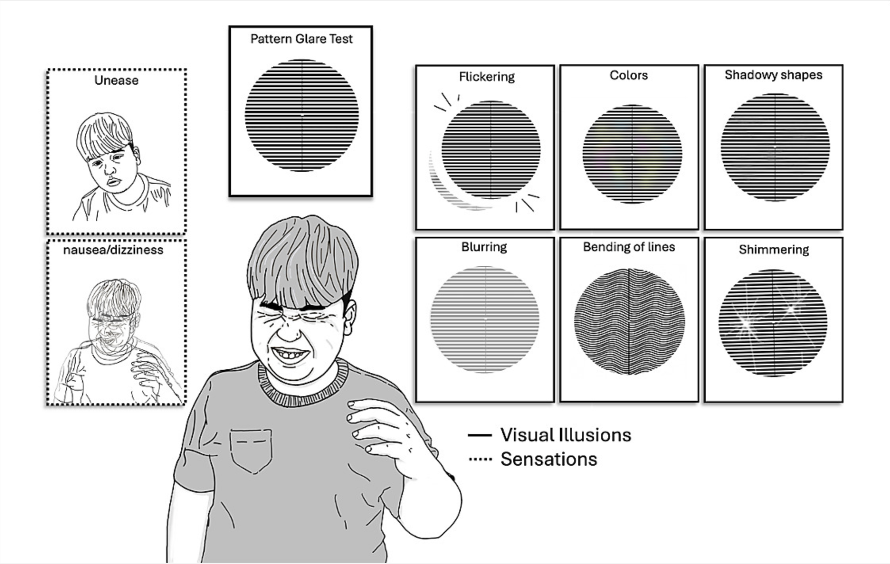
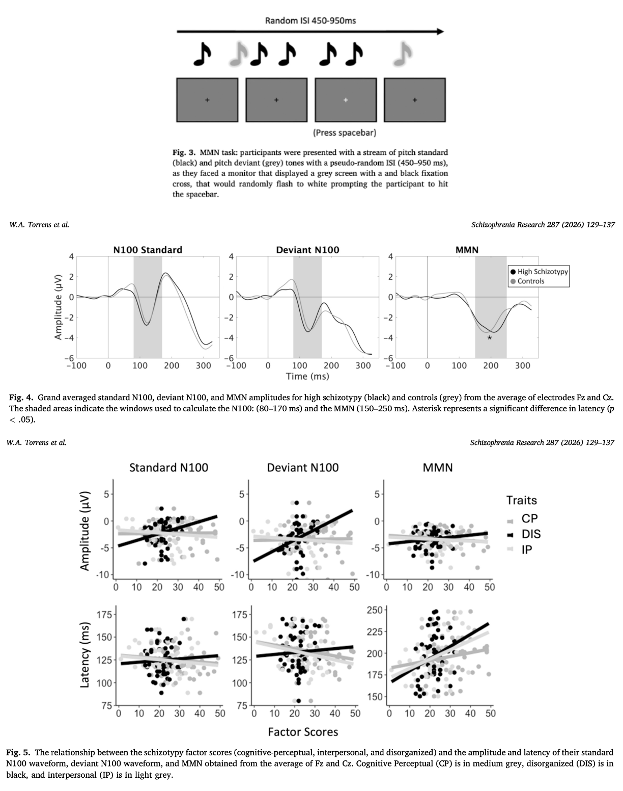
I evaluated the Universal Electroencephalography Clip, which was designed to reduce hair-texture bias in EEG recordings.
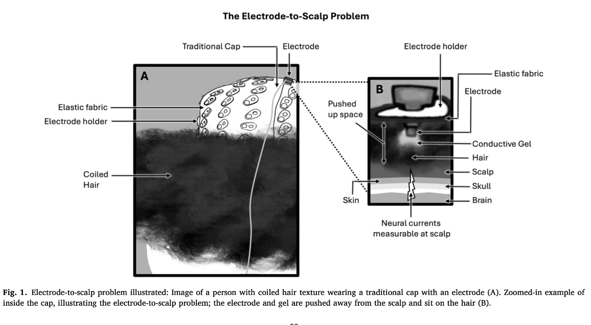
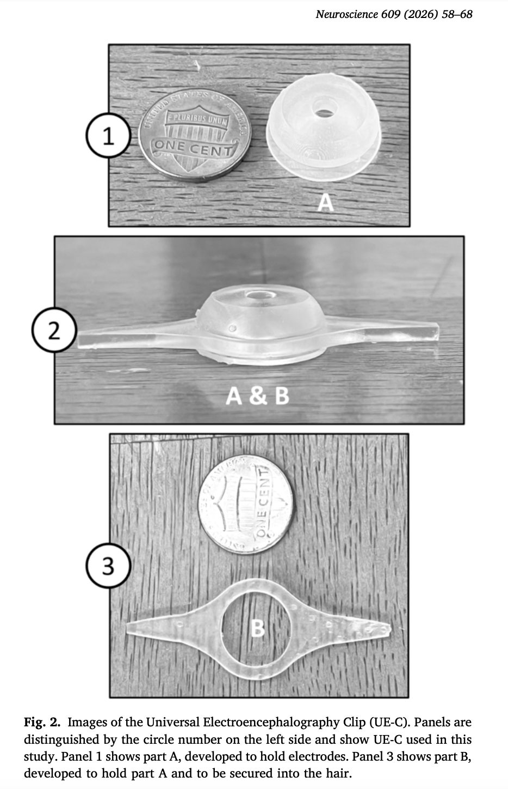
Torrens et al. · Neuroscience
Torrens et al. · Schizophrenia Research
Pablo et al. · Cognitive Neuropsychiatry
Torrens et al. · Cognitive Neuropsychiatry
Haigh et al. · Vision Research
Pablo et al. · European Journal of Neuroscience
Torrens, Pablo, et al. (co-first authors) · European Journal of Neuroscience
Torrens, Yescavage, and Wylie · El Rio
Center for Open Science · Zenodo
Nevada Today · University of Nevada, Reno
Nevada Today · University of Nevada, Reno
Nevada Today · University of Nevada, Reno
I’m a postdoctoral Advanced Data Science Fellow in Mental Illness Research and Treatment at the San Francisco VA Medical Center and UC San Francisco. I earned my PhD in neuroscience at the University of Nevada, Reno, where I studied sensory processing in the Haigh Lab.
I’ve mentored undergraduate researchers and shared neuroscience with students through Brain Awareness events and the Brain Bee.
I was born in Havana, Cuba, where pieces of my heart remain. I love the ocean, sky cats (i.e., owls), land cats (i.e., cats), and I spend my free time singing, painting, and, of course, doing SCIENCE! Don't be a stranger!
From left to right, the top row shows Tulip, Butter-Scotch, and Salem. The bottom row shows Ashes, Susan, and Petunia.
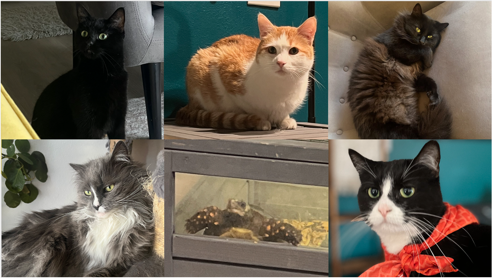
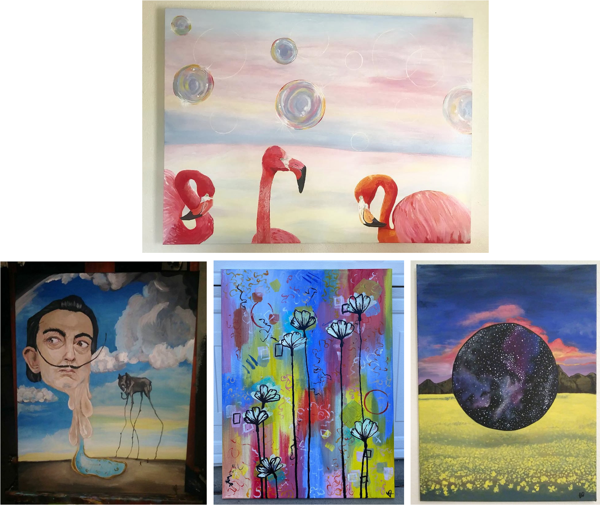
Undergraduate in psychological sciences.
Undergraduate in psychological sciences. Mia received a Nevada Undergraduate Research Award under my mentorship and went on to pursue clinical master’s programs.
Neuroscience undergraduate at the University of Nevada, Reno and a recipient of NIH-funded ENDURE support. Kensal was admitted to Columbia University’s occupational therapy program.
Psychology undergraduate at the University of Nevada, Reno with a minor in social research methods and applied statistics. Michelle received NIH-funded ENDURE support and pursued graduate preparation programs.
Psychology undergraduate at the University of Nevada, Reno with a minor in biology. After graduation, Rasia continued volunteering in the lab and pursued clinical hours working with autistic children and in hospice care. She planned to apply to medical school with an interest in psychiatry.
Double majored in psychology and neuroscience at the University of Nevada, Reno and went on to enroll in the university’s Master of Social Work program.
Neuroscience undergraduate at the University of Nevada, Reno. Wesley was admitted to the university’s Physician Assistant Studies program at its Lake Tahoe campus.
You can find some of these names in the Publication section!
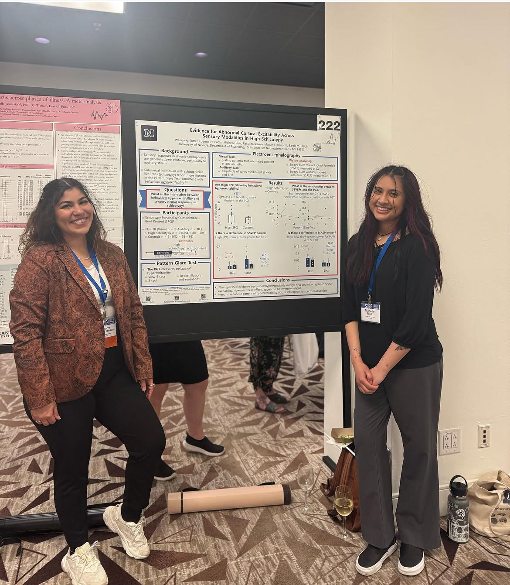
Michelle Ruiz (right) and I presenting our work.
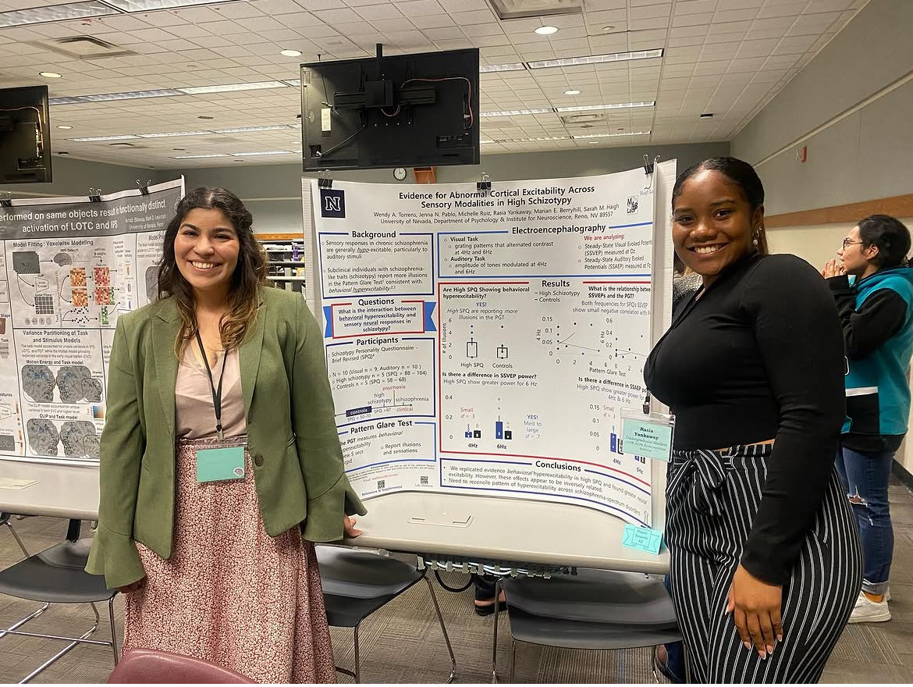
Rasia (right) and I presented our work.
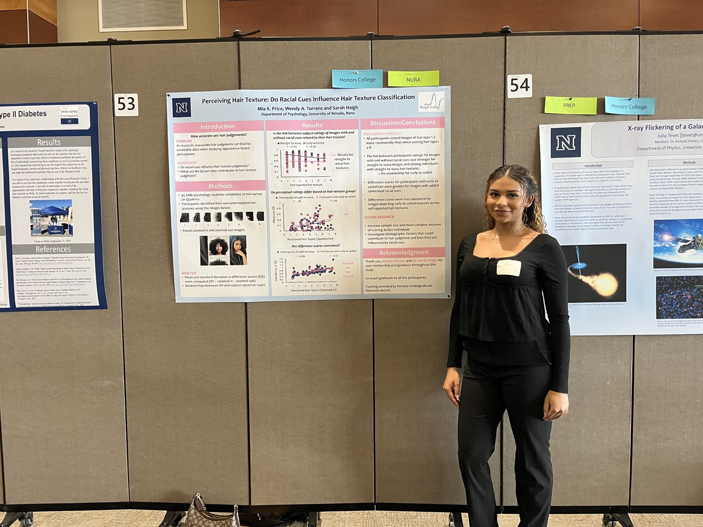
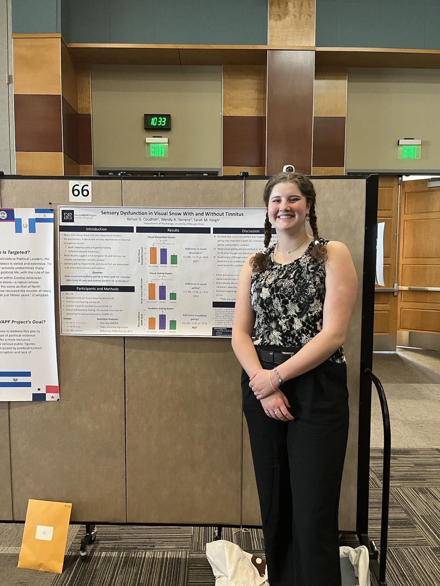